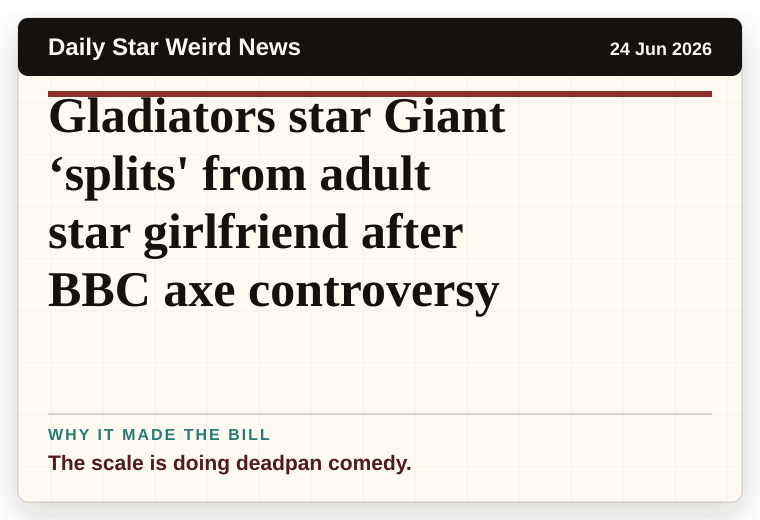
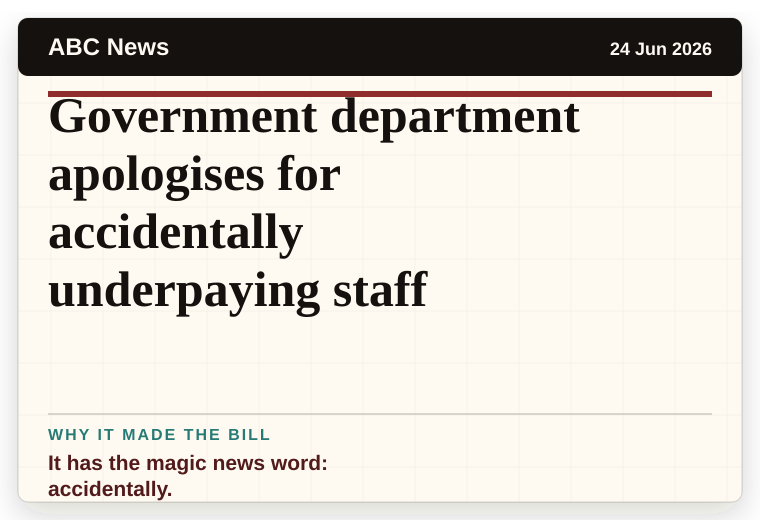
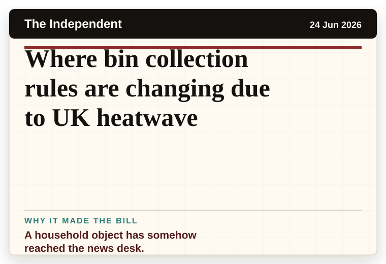
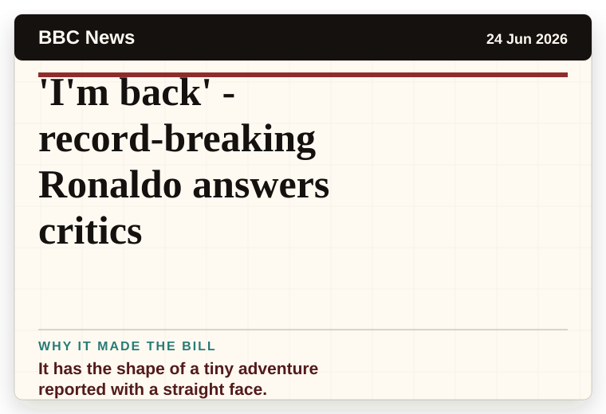
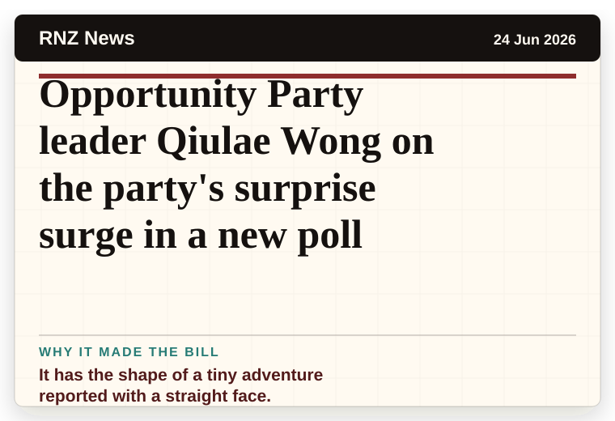
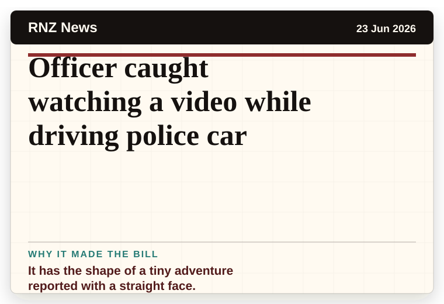
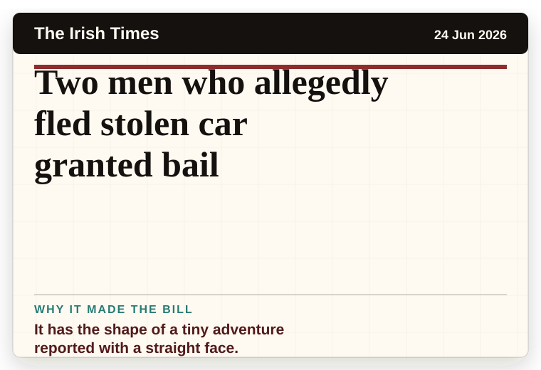
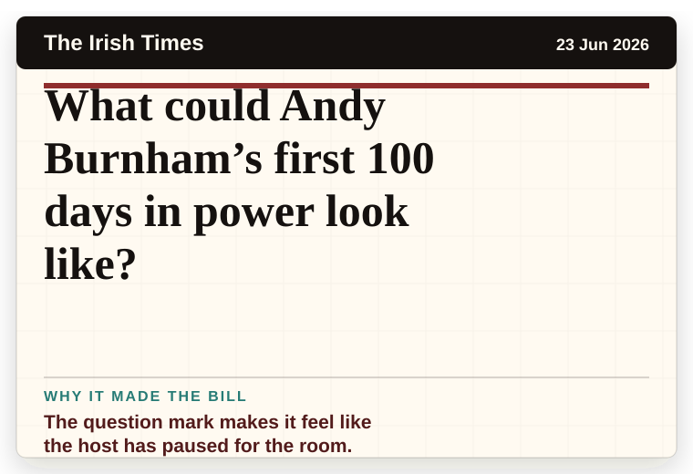

NT News
Australia
Jenny Mollen drops truth bombs about ‘bizarre’ Jason Biggs split, intimate bed photos with son
The headline is already trying not to laugh.
The latest daily picks, linked back to the original sources. Search the room, pick a source, or follow a headline out to the full story.
Record updated: 24 Jun 2026, 08:46 AM AEST
Showing 21 headline candidates from the refresh run completed on 24 Jun 2026, 08:46 AM AEST.
The headline is already trying not to laugh.

The object list sounds like someone shuffled three different stories together.

It has the shape of a tiny adventure reported with a straight face.

The scale is doing deadpan comedy.

A household object has somehow reached the news desk.

A wonderfully specific detail has taken centre stage.

A mystery is doing a lot of work in a very small sentence.

A very ordinary object has wandered into serious news.

The scale is doing deadpan comedy.

It has the magic news word: accidentally.

A wonderfully specific detail has taken centre stage.

A wonderfully specific detail has taken centre stage.

A mystery is doing a lot of work in a very small sentence.

The word chaos gives it open-mic energy.

A household object has somehow reached the news desk.

It has the shape of a tiny adventure reported with a straight face.

It has the shape of a tiny adventure reported with a straight face.

It has the shape of a tiny adventure reported with a straight face.

It has the shape of a tiny adventure reported with a straight face.

It has the shape of a tiny adventure reported with a straight face.

The question mark makes it feel like the host has paused for the room.